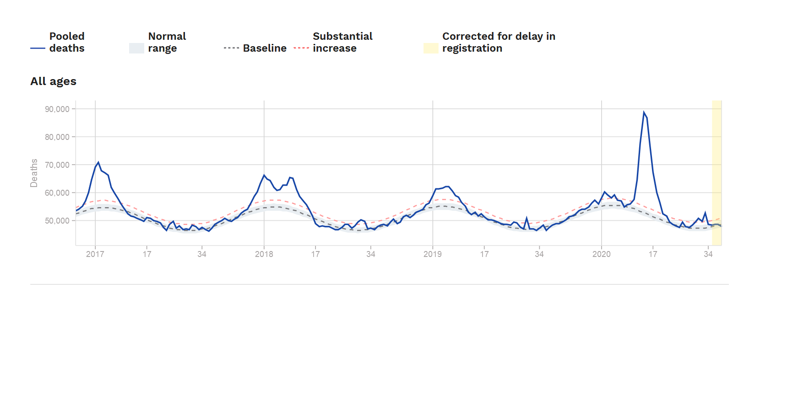

Have a look at the graph below which summarises (excess) deaths per week in 24 European regions, roughly the EU, over the last few years. Note how the vertical axis only starts at 40,000 and that hence the fluctuations relative to baseline are smaller than they seem here.

The interesting bit is of course the experience in 2020. In April I was skeptical of the argument that the excess deaths (the deaths above the "normal range" band) had to be covid-deaths, rather than a mix of covid-deaths and neglect deaths brought on by policies. Yet, around June the evolution of this graph convinced me that the big spike had to be almost exclusively covid. This is because the death rates before (in February) were at the average of a particular prior number of years (the blue line), and the death rates afterwards (June) were again at that historical average. The main point is that if there were a lot of neglect deaths, there would have been no return to the historical average: the line would have remained above that historical average. So the big spike, which is about 160,000 deaths, or 3 weeks of "normal deaths", is surely covid.
The lack of negative excess deaths also speaks against the idea that these excess covid-deaths were mainly people who would have died within a few months anyway. If that were true, the line should have gone below the historical average, but instead it was exactly on it. You dont see negative excess deaths anywhere in these 24 countries, perhaps marginally in France.
Associated with this is that the 160,000 excess peak is very close to the claimed number by authorities of the covid deaths in those countries: if you add the claimed covid-death numbers from the UK, France, Spain, Italy, Belgium, Hungary, and the others that make up the 24 in the graph above up to the date of the end of the spike, you also get to about 160,000. That validates both these numbers: the reported covid-deaths and the excess deaths as a measure of covid deaths. It is too much coincidence that these numbers should line up so well. So whilst this or that country might exaggerate or under-report their covid-death statistics for some reason, on average these countries are reporting their covid deaths rather honestly. There is no major group of deaths hidden or manufactured in the covid statistics of these countries. Not yet at least.
The next thing the graph tells us is that the winter flu season of 2017/2018 was a particularly bad one that had a similar excess death toll as the covid-spike. You might say "covid is not yet done" but the same goes for flu as the returning winter spikes in previous years tells you.
The final item of interest is at the end of the graph, basically before the yellow area where the official data is yet to come in. One sees these newer peaks in August. If you look at the countries involved, these peaks show up in Belgium, Portugal, the Netherlands, and Spain. Now in those countries you dont see a concomitant rise in reported covid-deaths in August. They report a rise relative to June/July, yes, but that rise is not big enough to rationalise the peaks. So there are now other things going on. Perhaps deaths of neglect, deaths of despair, or something else.
That final insight also tells us the excess death graphs are going to be less useful in the coming winter at separating the effects of covid from other sources of excess deaths. The sudden peak in April/May identified the covid-peak very neatly, but that wont be so clearly the case in the future, which means one must then look at other data to separate those. I will in particular be looking at the cause of death data from countries I trust not to change the definitions and practices (France, Germany) to tell me whether any claimed second wave of covid-deaths is real or not. So far, as a major killer of the population, covid has been over in these 24 regions since early June.
The Australian 2020 mortality data are fascinating. The ABS for the first time are publishing weekly doctor certified deaths data. https://www.abs.gov.au/statistics/health/causes-death/provisional-mortality-statistics/latest-release So far its published to the end of May. So far no sign of excess mortality. If anything the mortality data are a few per cent lower than what would have been expected due to the impact of population growth, ageing and the normal mortality rate reduction. And the reduction seems to mostly be in 'Respiratory deaths'. And this fits with the data on flu- flu syptoms in Flu Tracker are 10% of last year's level, and diagnosed flu deaths are very low. And pneumonia presentations at NSW ED are 50% of the average for the previous 5 years. It will be interesting to see the impact of the Victorian second wave deaths when they come through. The NSW Health interpretation of the NSW provisional deaths data is below 'Interpretation: When compared to previous years, there have been fewer deaths due to respiratory diseases generally, and in particular pneumonia, to date in 2020. This is likely to be due, at least in part, to the physical distancing and hand hygiene measures that have been put in place to help control the pandemic which have reduced person-to-person transmission of infections generally. The patterns of deaths from heart attack, stroke and cancer are similar to previous years. '
interesting. Whilst the NSW interpretation doesn't sound unreasonable, it must also be noted that the flu season pre-covid was unusually mild relative to the previous years. So maybe its also about the flu strains going round and existing immunity to the ones going round.
In a longer-run sense it is bad for the immune system not to be exposed to the pathogens in the general population, so the short-term gains from not getting ill if one does no mix come at a longer-run price. We have seen spectacular examples of this in history when isolated people got exposed to the diseases born by newcomers.
If you go to p.36 of this report you can see there is no influenza A and B being detected in NSW at present. Most other respiratory viruses are way down, though not all of them. So its not about the flu strains going around. Its that the reproduction rate for flu has gone below 1 so its effectively died out for now. https://www.health.nsw.gov.au/Infectious/covid-19/Documents/covid-19-surveillance-report-20200919.pdf The question of how many viruses/bacteria one needs to be exposed to and of what types so as to maintain a healthy immune system is an interesting one. One of those areas where we don't have enough data to know the optimal exposure to pathogens. Another tradeoff that has to be made on the basis of very limited information. One of the joys of the complex tapestry of life!
fair enough.
"In a longer-run sense it is bad for the immune system not to be exposed to the pathogens in the general population"
That's undoubtedly true given you are you are exposed to any number of pathogens every day. It's which ones you don't want to get exposed to which is more interesting. For example, given sanitation, we arn't exposed to various parasites and other pathogens a fair chunk of humanity has or will have, and I don't see people complaining about that except when they holiday in the third world. It's also not clear to me that these examples from past history are a great guide to what you may want to get exposed to and your options (both ways) given vaccines, knowledge of how things spread, international air travel, 7 billion humans etc. .
I am sure this writer thinks he is being informative but he is not. You are a typical idiot expert who will never give any information unless it is covered in useless data, badly thought out graphs that are extremely difficult to see. I suggest you tell us what you mean in twenty words or less because you are, sadly, unable to properly express yourself. Stop wasting your life babbling on, get a lawn mowing round that would do more for you and the world around you.
John in Warragul I'm not clear what improvement in wellbeing you were aiming for with your post. How was your post more useful than mowing the lawn, (which I will be doing shortly incidentally)? It's a genuine question. I think our duty in life is to be useful, and I'm struggling to see how your post was useful.
Sceptical is spelled thus and you are working in the UK !!
It appears you do not understand the problems of flu has reduced because of covid measures.
Working from home, can't work if you have a sniffle, social distancing have all bbut led to flu reducing substantially if not almost eradicated here is OZ.
No idea about Europe but surely ( sorry I won't call you shirley again. what you have not seen Flying high?) it would be similar there.
You have probably already found it, but in case you haven't, the US data is available here: https://www.cdc.gov/nchs/nvss/vsrr/covid19/excess_deaths.htm . You can look at the different states too, so you can see the massive peak in NY, whereas other places are hardly even noticeable (e.g., Hawaii)
I agree one should try to be useful. Something I try to live by too.
Don't pay attention to the vitriol. It comes with the territory. I dont mind to see a bit of it in the comments as long as its not too boorish. When I re-read posts of years ago it is such comments that remind me what many other people thought at that time. In an odd way it gives perspective to what I was saying. If ever an historian bothers to comb through posts like these, it will be dead easy to see what contemporaries really thought of something.
Of course, in 2017 governments made major effort to deal with the mini-demic they had on their hands, the flu, the same way 2020 European governments and citizens decided to respond to COVID-19.
Excellent article on comparing Europe to the USA on excess deaths.
Europe has done a lot better than the USA
Still waiting on an answer Paul.
Further to the reduction in flu issue, this article discusses the situation focussing on Brisbane in particular. https://www.news.com.au/lifestyle/health/flurelated-hospital-admissions-plummet-from-900-to-just-1-in-brisbane-thanks-to-covid/news-story/93aadbab3a7867a3a5711f1dc8d2883b
One very interesting observation is that
'Despite the massive drop in influenza, the common cold has still been prevalent, in particular Rhinovirus. Prof Cripps said unlike coronavirus, which was susceptible to alcohol-based hand sanitiser, Rhinovirus was not. “There’s one virus in the community at the moment, Rhinovirus, a cold virus because it is not susceptible to alcohol hand wash,” he said. “The fact we have seen this massive drop since November in the flu but no relative change in Rhinovirus is fascinating.”
This indicates it may be possible to get a major reduction in flu by the widespread use of alcohol-based hand santiser alone. If that proved to be possible, it would be a really cost-effective flu intervention.
Ta but we know the flu is almost nowhere here in OZ.
What I asked was did this occur in Europe.
If it did even to a minor extent as the lockdowns came after winter started it would make the excess mortality deaths worse
Hospital covid admissions and numbers needing ventilators in the UK are showing a slight rise but its nothing like the first wave.
And going off the World info-meter site in europe in general cases have rising steeply for more than a month now but deaths while up a bit, are not rising like they did the first time around.
Marielouise Mclaws says you should expect lower deaths because it is hitting the young.
The long term consequences of this could be horrid ( my words)
Id guess that much of the collateral damage to health and happiness will take time to manifest:
Suicides after traumatic stress usually happen many years later, for example Pompey Elliott killed himself in 1931 years after the end of WW1. And its often been the same with Vietnam vets.
Extra deaths related to delays in cancer treatments and the like could start showing up in a year or two but it probably could take a few more years than that to really show up.
I gather in the UK there has recently been a noticeable- above the five year average- rise in (non covid) deaths at home, the reasons for that I gather are unclear at this stage.
the damage to happiness and mental health is immediate and huge. You see this in the UK data but also in other countries: lockdowns cause widespread unhappiness and a massive increase in mental health problems. Much of that is gone when the lockdowns stop. The effects of unemployment have certainly been masked though by subsidies.We see quick reductions in healthy behaviour which we know will cost in the long run. We also see a lot of delayed health care. Its going to be a nightmare picking out effects of different measures though via patient data. The route I have taken, which is to rely on long-run established relations between health service activity and health, as well as government spending and health/happiness, is probably going to remain the best way to get an estimate of the effects.
but but but there is no way of examining this compared to other recessions. in possibly the only metric we have suicides did not rise here in OZ or indeed in Victoria recently however we do know they did rise in the USA. Possibly an easy answer to that.
Not Trampis I’d guess that you like me are old enough to be at higher risk of death . I’ve sincerely prayed for you this evening, prayed that you would be freed of the demons of selfish monocular vision. Peace be with you
Any real evidence of this massive increase in mental health problems caused by the lockdown that people are talking about vs. the stress of catching a nasty virus? In addition, even if there is an increase, some of this is likely to be caused by anxiety of catching the virus.
Also, long term health problems are known to increase suicide levels. So if Covid causes this in some proportion of people (which seems rather likely now) you are going to get suicides on the other side of the equation too for that reason.
Gosh al that simply because I may have pointed out a major weakness of Pauls.
wow.
Perhaps you should look in the mirror about selfishness.
There are by now be hundreds of studies on this around the world because its quite easy to do so. One can compare those still working with those on subsidies, those forced to close their business with those not, those forcibly isolated versus those not, etc.
Studies in the UK show a doubling in depression rates (up to 20%). https://www.theguardian.com/society/2020/aug/18/depression-in-british-adults-doubles-during-coronavirus-crisis
I have constructed my own graphs from ONS data on wellbeing and anxiety. The anxiety levels peak but gradually return closer to before. You see anxiety graphs returning closer to baseline in many countries. Wellbeing stays low throughout lock down. It does seem to bounce back after lock downs but is still heavily affected by social distancing. Humans are not meant to be physically isolated from their social groups.
the long-covid problem you cite is another red herring in this debate when it is used as explanation for mental health problems or reasons to keep going on the previous path. It exists but is not very prevalent and doesn't seem chronic either. I think saupreiss dug up a bunch of studies on a previous comment of his that gave the state of play on this but do look up the numbers yourself.
The red herrings and ex-post reasons for choices made for different reasons will keep coming though.
the red herring here is you asserting this is because of the recession that the lockdowns caused You either cannot or will not show how this was in previous recessions.
That data doesn't distinguish between "I don't want to get the virus" vs. "I want to hang out with my friends more". One can imagine they are not necessarily orthogonal.
Long term symptoms are certainly not a red herring. Here are what the guys over at the Howard Florey think in a nice review article: https://content.iospress.com/articles/journal-of-parkinsons-disease/jpd202211
There is no question that lockdown causes large amounts of anxiety/depression. One of the interesting questions is the long term impacts. Some of the anxiety/depression causes irreversible impacts like suicide. But if the lockdown is not ongoing there may not be much irreversible impact. This is where the measure of health that you focus on is important. Does one focus on the stock of human capital or the flow that comes out of human capital? I think the stock is more important. And the chronicity of morbidity is important in relation to this. So one loses a lot more satisfaction from expected ongoing depression as compared to episodic depression through such things as mourning the loss of a loved one. The short term/long term issue is also relevant with regard to unemployment. Its long term unemployment that markedly reduces human capital, so if your political system is able to reduce long term unemployment from recessions, this has major utility benefits. COVID has changed my view as to where decision makers should focus. I think more effort should go into trying to avoid irreversible events like death and relatively less effort into avoiding short-term impacts like short-term morbidity.
The management failure of Victoria’s quarantine hotels turned them into a seedbed for the virus to multiply and spread. The UKs per capita death toll is quite a bit higher than Swedens . When governments are much better at ‘performance’ than at actual work,the results of government interventions in true crises are likely to be worse than if they did relatively little.
you clearly have a similar attitude to mine. Its an empirical question as to what effects people more and indeed, mourning is temporary, chronic depression (which is rare) is not. Big sources of long-term damage in these lockdowns is the effects of loss of schooling on kids (particularly those at the bottom), the loss of employment prospects in certain industries/professions, the lost opportunity for IVF-children among thousands of families, the long-run health problems caused by health service neglect, and the cases of long-run mental health problems. Those sources by a huge multiple outweigh the risks of the virus, but both the public sector and a high proportion of the population are blind to this suffering. As if this pain is unworthy of being noticed.
“I want to hang out with my friends more” such a snobbish thing to say about people you don’t know of or have any sympathy for.
let us just take one argument here.
Those using IVF cannot during a lockdown.
If the officials do not panic and they did in our national lockdown then when do ICUs get clogged up so private hospitals must be used.
That's right under Paul's scenario where you let it rip.
you have much less virus infections and less deaths under a lockdown and as we have seen economic activity is not too flash either.
does anyone here really think schools would be open when the virus is spreading rapidly???
One last time the one and only reason for repeated lockdowns is failure of government systems.
Korea had to increase the restrictions it uses in large part because various church groups ignored congregations limits, and similar things have happened in other places (e.g., Israel -- which had to lock things down because of it). Unless you want to be East Germany and monitor everything and everyone all the time, it's hard to see how this is a failure of the government.
I agree with you Paul it is an empirical question. And one of the bright sides of these difficult times is that we have had lots of different policy interventions to compare. And so far my evaluation is that the benefits of the lockdown and tight border control in Australia and NZ have exceeded the costs. But for the COVID interventions in the UK and France the costs have exceeded the benefits. And so I think the French decision to not have a second lockdown is rational. But was it irrational to undertake the first lockdown? I think not, because the experience of Australia and NZ is that if you do lockdown in conjunction with tight border control the benefits exceed the costs. Its unfortunate for France and the UK that they were not comprehensive enough with their control measures in the first place. (And for all I know tight border control may not have been a realistic option). So the lesson from the UK and France is that lockdown without effective border control is not enough. And second, if your first lockdown (in association with other control measures) fails, then the psychic and other costs of a second lockdown means a second lockdown is not worthwhile. Does this mean I think Victoria should not have had a second lockdown? No. Because I think there was good evidence that a second lockdown in Victoria, in the context of tight Australia border control, would control the pandemic. Whereas the evidence in France at present points in the opposite direction, so the optimal decision for them is to limit the damage of the virus using low cost measures until a vaccine arrives. Optimal decision making is always contingent on particular circumstances.
BS
Israel gave it to it to its inelegance services to run and unsurprisingly many refused to cooperate . Am tired of the special pleading, you are Id guess a member of the ruling class and its always in your terms the fault of the peasants.
Have nothing but contempt for your self serving crap.
It seems to me that what makes the Swedes unusual is that they don’t think of their government and ruling class as an occupying power.
here is a nice take-down of the changes in argumentation that the pro-lockdown people have made regarding Sweden, documenting how the story went from the "disaster unfolding because they are all still running around" to "they did lockdown voluntarily". https://www.spiked-online.com/2020/10/01/sweden-has-destroyed-the-case-for-lockdown/
Quite standard response of ruling gangs to evidence that they have no idea , are worse than useless.
what about people who said Sweden had herd immunity?
If so more people cannot get the virus.
Sebastian Rushworth has already answered your question. But Sebastian is only a MD working in an emergency room in Stockholm, who can string a coherent sentence together. Obviously he’s not your kind of chap.
That's an awful takedown:
1) The author generalizes from one country (Sweden) to all others, despite the fact the patterns are so variable it's clear what works in one country won't necessarily work in another. For example, I can't tell you why German's don't die like Italians, and as far as I'm aware, no-one else can anyone either.
2) The author goes after strawmen saying Sweden's low density population density doesn't matter and that most Swedes live in cities. Does that generalize to London or New York? I don't think so . All that's happening is that people are using low density to mean "not much high-rise stuff and very dense cities" vs. "spread-out suburbia without crowded crappy hot spots such as the French Banlieus".
3) He then uses examples from poor countries like Brazil and Peru where people have no choice but to keep going, have a poor medical system, don't have such good sanitation etc. Really?
4) The Swedish recently admitted it's Covid cases are basically going up again, so its not even a finished story. Madrid is also getting locked down again despite 13.2% of them having antibodies from April-May (see the Lancet article about from them). So the fact that you have reasonable stretches where it doesn't look like people are catching it doesn't mean than 4* as many people have become immune and you just can't see it. Otherwise, where would all of these new cases actually be coming from (unless they were getting reinfected)?
BTW Conrad Sebastian Rushworth is not Christopher Snowden. Not that facts matter to you.
They don't seem to matter to you John -- if Madrid got herd immunity, where are all these new cases coming from? https://www.9news.com.au/national/coronavirus-world-news-spain-madrid-lockdown-paris-bars-closure-uk-rise-in-cases/43509434-39d0-4d83-a8b0-616ffb2614aa
Here is the data for you from months ago: https://www.ncbi.nlm.nih.gov/pmc/articles/PMC7336131/pdf/main.pdf
From the MD on the ground in Stockholm https://sebastianrushworth.com/2020/09/28/herd-immunity-without-antibodies/
Sweden’s per capital deaths is less than the UK. Sweden did not do a stage 4 style lockdown, people were not fined for sitting down on a park bench nor were they banned from leaving their homes for more than an hour or two per day.
Going off on the ground reports there is little sign of a second spike.
Evidence that severe lockdowns have made a jot of difference to long term outcomes is non existent.
The reason for Victoria’s second lockdown is repeated government systems failures , not because the average Victorian is ‘naughtier’ than the rest of the country .
for the umpteenth time.
no Sweden did not have a formal lockdown but Germany did.
Google stats found LITTLE difference between people in both countries.
They have not come within cooee of herd immunity.
If a country has had herd immunity it cannot have an increase in people having covid.
Best to read epidemiologists not an MD on this issue.
In the end Sweden's record is poor compared to ours
I don't disagree there are likely to be different types of immunity -- even the different vaccines stimulate types of responses so we'll probably learn what was working even naturally from some of that.
But if you look at the second wave, it has clearly taken off in previous hot spots where high levels of immunity are supposed to have exist according to the optimistic. Where I work in France often (Marseille), for example, the hospitals are now full, and you can see death rates are ticking up (I assume it is similar in Madrid -- the UK looks like it is now just starting to tick up). Once you have that many cases, unlike you, I don't think the government will be able to stop them killing vulnerable populations more or less no matter what they do (we shall see). It will just take longer to get to them.
Another way to think about this is that let's say all this stuff about Sweden is correct, and the latest increases they are seeing very recently (as noted by their government and you can see on the odometer) will just wash over without too many problems. Does the exception (Sweden) prove the rule? I don't think so. If it did, we could use NZ or Aus as the exception which proves lock downs work well and reasonably quickly. But that's not the case. Or we could use Singapore to show if you have an excellent health-care system almost no-one will die. But clearly more is going on in Singapore (although obviously having one of the best health care systems in the world helps)
Also, I agree with you that the Victorian rules were overly draconian incidentally. If they could stop large gatherings (e.g., at the beach on hot days), then I really don't see why people couldn't wander around outside for as long as they wanted. There's almost no evidence of transmission for that type of activity anywhere as far as I'm aware, and the initial lockdowns in Aus where this wasn't enforced still worked. Indeed, there were so many people wandering around outside in Adelaide, I wonder if people got healthier -- although I live near a park where there are long walks, so I may be biased. Alternatively, the obvious reason they put the curfews on in Victoria was because in other places younger groups had organised illegal raves at night and caused super-spreading events. So the problem they have is the more people get sick of the curfews, the more authoritarian they need to be to stop large gatherings.
Conrad it’s not about the “exception “ rather it’s about the lack of evidence that lockdowns in themselves have made even a medium term difference to national outcomes .
Rather the differences that seem to matter are for example :quickly getting effective track test and trace running , targeted interventions I.e. Germany’s response to meat works clusters, leadership that is trustworthy ,rules that are coherent, rational and easy for locals to understand the reasons for them. They are the measures need and suited to what is likely to be a very long journey.
We also need to acknowledge that premature deaths because of extended lockdowns delaying cancer treatments and the like can only in the next few years mount.
I agree that we should be encouraging getting out in fresh air and sunlight, that plus moderate exercise has always been the best tonic. One of Nightingales most effective measures was simply litteraly opening the windows .
Forgot to add leaders must not offer false hope I.e. elimination and we can go back to how it was a year ago particularly because, how it was a year ago was not too good anyway.
In Australia particularly in Victoria we have seen that performance style government : centralised, chaotic and indifferent or simply ignorant of first principles,when faced with a real enemy is worse than useless.
Am optimistic that things can and will improve.
What is the baseline death rate in the graph? Why does it not have a steeper peak in Winter. In the past three years the flu peak is way above thiz "baseline". So I do not see in what sense it is a baseline.
What utter nonsense:
"If a country has had herd immunity it cannot have an increase in people having covid."
Herd immunity does not mean that. It simply means that second waves are not likely to happen any time soon. Sweden is doing reasonably well. While infections have crept up recently, the number of deaths has kept steady at around 15 per week. Karlsten discusses why that may be: https://emanuelkarlsten.se/coronaveckan-som-gatt-v40/
The number of excess deaths has turned into negative territory weeks ago.
As to whether Australia is doing better than Sweden, or other favorite reference points, for the umpteenth time, Ms Tracey, we won't be able to tell unless this all has played out (budget deficits blowing out, livelihoods destroyed, millions un(der)employed, hundreds of thousands of superannuation accounts raided, mental health problems galore probably affecting a seven-digit number of people rather than a six-digit number, and so on).
oh dear,
someone does not understand herd immunity.
err they should not even be steady except Sweden did not have nor ever had herd immunity.
I am intrigued by the mental health problems which we have no data in previous recessions.
Would they be higher or lower under a Fritjers scenario as i might say most other scenarios would be
My guess they would be higher in that you simply would not know when you would get the virus and then possibly death.
Ah yes deaths are lower now everywhere but most people understand that and why.
Saupreiss Two of the many things our friend doesn’t understand are: normally a “case” means the effects of the infection ( or whatever) were serious enough to need medical attention. And for pragmatic purposes if you absorb a virus and it results little or no effects then you effectively have immunity.
Saupreiss Forgot to add another thing our friend doesn’t understand is the false positive for the tests rate relates to ,the total number tests made, I.e. its about 1 percent of all the tests conducted, not 1 percent of the tests that show a positive result. So if the actual infection rate is one in a thousand then a random test of one thousand people will detect one true infection plus about nine false positive cases.
well done John,
you have 'answered ' an issue I did not raise.
Perhaps at some stage you might address if you can
In itself the current lack of a significant rise in hospitalisations and death is evidence that some kind of group immunity- resistance has developed.
And a significant percentage of the positive test results may well be artefacts .
The baseline is I think the gray dotted line and “ Note how the vertical axis only starts at 40,000 and that hence the fluctuations relative to baseline are smaller than they seem here.”
Mr Not
All you ever do is beg the question.
I don’t accept that I must start within the limitations of your mind .
please just learn one lesson before another deflection.
Herd Immunity means normal life.
this usually occurs when there is a vaccine
What on earth are you trying to say?